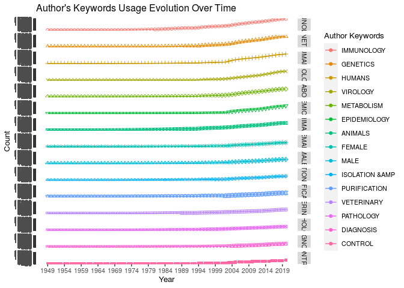

EpiBibR is an R package to easily access bibliographic data on Covid-19 and other medical references. In this global crisis, knowledge and open data can have an impact. In this regard, our team thought it could be significant to make available more than 20 000 references (journal articles,letter,news) through R.
The references were collected via PubMed, a free resource that is developed and maintained by the National Center for Biotechnology Information (NCBI), at the U.S. National Library of Medicine (NLM), located at the National Institutes of Health (NIH). PubMed includes over 30 million citations from biomedical literature.
More specifically, to retrieve our references, we adopted the procedure used by the Allen Institute for AI for their CORD-19 project. We apply the same query on PubMed (“COVID-19” OR Coronavirus OR “Corona virus” OR “2019-nCoV” OR “SARS-CoV” OR “MERS-CoV” OR “Severe Acute Respiratory Syndrome” OR “Middle East Respiratory Syndrome” ) to build our own bibliographic data.
To navigate through our bibliographic data, EpiBibR has numerous search arguments: author, author’s country of origin, keyword in the title, keyword in the abstract, year and the name of the journal. Each of them can truly help scientists and R users to filter references and find the relevant articles.
In an effort to rally our package with the open source community, the format of our dataframe has been designed to facilitate the use of the R package Bibliometrix on our data.
First, install corridoR:
devtools::install_github("warint/EpiBibR")
Next, call EpiBibR to make sure everything is installed correctly.
library(EpiBibR)
| Field Tag | Description |
|---|---|
| AU | Authors |
| TI | Document Title |
| AB | Abstract |
| PY | Year |
| DT | Document Type |
| MESH | Medical Subject Headings Vocabulary |
| TC | Times Cited |
| SO | Publication Name (or Source) |
| J9 | Source Abbreviation |
| JI | ISO Source Abbreviation |
| DI | Digital Object Identifier (DOI) |
| ISSN | Source Code |
| VOL | Volume |
| ISSUE | Issue Number |
| LT | Language |
| C1 | Author Address |
| RP | Reprint Address |
| ID | PubMed ID |
| DE | Authors’ Keywords |
| UT | Unique Article Identifier |
| AU_CO | Author’s Country of Origin |
| DB | Bibliographic Database |
EpiBibR allows you to search bibligraphic references using several arguments : Author, author’s country of origin, author + year, keywords in the title, keywords in the abstract, year and source name.
To get the entire bibliographic dataframe contaning more than 25 000 references, use the EpiBib_reference function
EpiBib_data <- EpiBib_references()
covid_articles <- EpiBib_title("covid")
coronavirus_articles <- EpiBib_abstract("coronavirus")
A2020_articles <- EpiBib_year(2020)
bio_articles <- EpiBib_source("bio")
Bibliometrix package allows an easy bibliometric analysis on R. Our EpiBib data have been designed to make it easier to use. A shinyapp is also available biblioshiny()
Here are some examples:
# Bibliographic plot summary EpiBib_data <- EpiBib_references() M <- EpiBib_data
plot(x = results, k = 10, pause = FALSE)
library(reshape2) library(ggplot2) kword <- KeywordGrowth(M, Tag = "DE", sep = ";", top = 15, cdf = TRUE) DF = melt(kword, id='Year') #timeline keywords ggplot ggplot(DF,aes(x=Year,y=value, group=variable, shape=variable, colour=variable))+ geom_point()+geom_line()+ scale_shape_manual(values = 1:15)+ labs(color="Author Keywords")+ scale_x_continuous(breaks = seq(min(DF$Year), max(DF$Year), by = 5))+ scale_y_continuous(breaks = seq(0, max(DF$value), by=10))+ guides(color=guide_legend(title = "Author Keywords"), shape=FALSE)+ labs(y="Count", variable="Author Keywords", title = "Author's Keywords Usage Evolution Over Time")+ theme(text = element_text(size = 10))+ facet_grid(variable ~ .)

Information that is created by or for the US government on this site is within the public domain. Public domain information on the National Library of Medicine (NLM) Web pages may be freely distributed and copied. However, it is requested that in any subsequent use of this work, NLM be given appropriate acknowledgment.
NOTE: This site contains resources which incorporate material contributed or licensed by individuals, companies, or organizations that may be protected by U.S. and foreign copyright laws. These include, but are not limited to PubMed Central (PMC) (see PMC Copyright Notice), Bookshelf (see Bookshelf Copyright Notice), OMIM (see OMIM Copyright Status), and PubChem. All persons reproducing, redistributing, or making commercial use of this information are expected to adhere to the terms and conditions asserted by the copyright holder. Transmission or reproduction of protected items beyond that allowed by fair use (PDF) as defined in the copyright laws requires the written permission of the copyright owners." https://www.ncbi.nlm.nih.gov/home/about/policies/#copyright